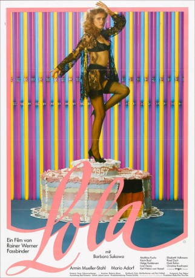
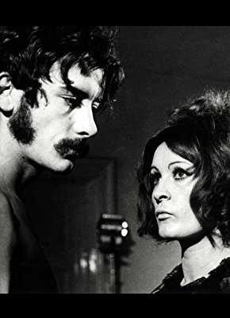

#7175 Lola
 
 IMDB-Wertung: 7.7 / 10
IMDB-Wertung: 7.7 / 10  Tomatometer: 100
Tomatometer: 100  Metascore: 0
Metascore: 0 
Eine Stadt in Deutschland. Deutschland im Herbst 1957. Wirtschaftswunder. Adenauer-Ära. Eine Stadt im Aufwind des Wiederaufbaus. Jeder, so scheint es, hat einen Nutzen davon. Vor allem Herr Schuckert, der erfolgreiche, joviale, lebenslustige Baulöwe der Stadt. Er ist der heimliche Herrscher. Er hat alle in der Tasche und steckt das meiste in seine Tasche. Alle Honorationen tanzen nach seiner Pfeife, denn Schuckert läßt sie teilhaben am Bauboom, so sind alle zufrieden. Die Honoratioren der Stadt treffen sich nächstens heimlich in der Villa der Frau Fink, um sich zu amüsieren. Madame und ihre Mädchen sind hingebungsvoll um das Wohlergehen ihrer Gäste bemüht. Auch hier gibt Herr Schuckert den Ton an. Star der "Villa Fink" ist Lola, die eigentlich Marie-Louise heißt und eine kleine Tochter, Mariechen, hat. Die Männer umschwirren Lola, wenn sie tanzt und singt. Ein verführerisches Wesen. Und Herr Esslin begleitet sie - nicht nur am Klavier...
Jahr: 1981
Dauer: 114 Minuten
FSK: 16
Land: West-Deutschland Studio: TobisTonspuren:
Untertitel:
Auflösung: 1080p (1792x1080) Größe: 6717 MB
Genre: Drama, Liebe
Regisseur: Rainer Werner Fassbinder
Drehbuch: Pea Fröhlich
Soundtrack:
Darsteller:
 Barbara Sukowa als Lola
Barbara Sukowa als Lola Armin Mueller-Stahl als Von Bohm
Armin Mueller-Stahl als Von Bohm Mario Adorf als Schuckert
Mario Adorf als Schuckert Matthias Fuchs als Esslin
Matthias Fuchs als Esslin- Karin Baal als Lola's Mother
- Ivan Desny als Wittich
- Elisabeth Volkmann als Gigi
- Rosel Zech als Frau Schuckert
- Christine Kaufmann als Susi
 Günther Kaufmann als GI
Günther Kaufmann als GI Isolde Barth als Frau Völker
Isolde Barth als Frau Völker Udo Kier als Waiter , uncredited
Udo Kier als Waiter , uncredited- Juliane Lorenz als Saleswoman , uncredited
- Helga Feddersen als Fräulein Hettich
- Hark Bohm als Völker
- Karl-Heinz von Hassel als Timmerding
- Sonja Neudorfer als Frau Fink
- Y Sa Lo als Rosa
- Karsten Peters als Editor
-  Harry Baer als 1st demonstrator
- Rainer Will als 2nd demonstrator
- Herbert Steinmetz als Concierge
- Nino Korda als TV delivery man
- Andrea Heuer als Librarian , uncredited
- Maxim Oswald als Grandfather Berger , uncredited
- Helmut Petigk als Bouncer , uncredited
- Marita Pleyer als Rahel , uncredited
- Ulrike Vigo als Little Marie , uncredited
Datei: X:\1981\Lola (1981, FSK16, 1792x1080).mkv seit 02.10.2017
Festplatte: HD 1980-1986
 Es gibt insgesamt 33 Filme in der Gruppe '1981'
Es gibt insgesamt 33 Filme in der Gruppe '1981'